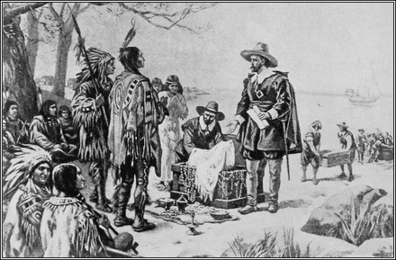

HISTORY

Etymology
In 1664, the city was named in honor of the Duke of York, who would become King James II of England. James's older brother, King Charles II, had appointed the Duke proprietor of the former territory of New Netherland, including the city of New Amsterdam, which England had recently seized from the Dutch.Early history
During the Wisconsinan glaciation, 75,000 to 11,000 years ago, the New York City region was situated at the edge of a large ice sheet over 1,000 feet (300 m) in depth. The erosive forward movement of the ice (and its subsequent retreat) contributed to the separation of what is now Long Island and Staten Island. That action also left bedrock at a relatively shallow depth, providing a solid foundation for most of Manhattan's skyscrapers.[88]
In the precolonial era, the area of present-day New York City was inhabited by Algonquian Americans, including the Lenape, whose homeland, known as Lenapehoking, included Staten Island; including the area that would become Brooklyn and Queens; Manhattan; the Bronx; and the Lower Hudson Valley.[89]
The first documented visit into New York Harbor by a European was in 1524 by Giovanni da Verrazzano, a Florentine explorer in the service of the French crown. He claimed the area for France and named it Nouvelle Angoulême (New Angoulême).[90] A Spanish expedition led by captain Estêvão Gomes, a Portuguesesailing for Emperor Charles V, arrived in New York Harbor in January 1525 and charted the mouth of the Hudson River. The Padrón Real of 1527, the first scientific map to show the East Coast of North America continuously, was informed by Gomes' expedition and labeled the northeastern United States as Tierra de Esteban Gómez in his honor.[91]